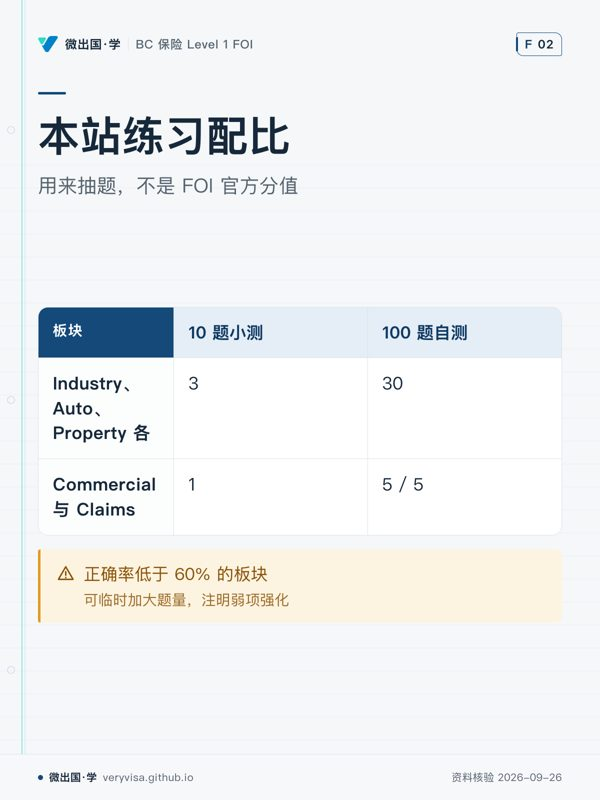

核实日期：2026-09-26｜来源：IBABC FOI 课程页、IIC BC Level 1 Licensing Exams 页 BC Level 1 的认可学历有四条，本站按 FOI（IBABC） 组织。FOI 考试和 IIC 的 Level 1 考试是两场不同的考试：时长不同；IIC 页列出了分板块权重，本次核对的 IBABC FOI 说明页没有列。
FOI 与 IIC：两场考试的规格
| FOI（IBABC） | IIC Level 1 考试 | |
|---|---|---|
| 题量 | 100 题单选 | 100 题单选 |
| 时长 | 2.5 小时（150 分钟），线上 | 2 小时，闭卷 |
| 及格线 | 70% | 70% |
| 分板块权重 | 说明页未列，本站未核实到 | Industry Knowledge 30%、Automobile 30%、Property 30%、Commercial Property and Liability 5%、Claims 5% |
| 适用资料版本 | 2017 版 + 2024-04 Autoplan 增补 | GIE C81/C82（2025-09-02 起用 2025 版） |
本站计时器按 FOI 规格走：100 题 150 分钟，平均每题 90 秒。
右列的权重只描述 IIC 那场考试的卷面。本站没有核实到 FOI 各板块的官方分值，两场考试的时长也不同，所以 IIC 的百分比不能当成 FOI 的分值。CAIB 是 IBABC 的另一条路径，它的规则同样不套用到 FOI（见 CAIB 与 FOI 差异页）。
IIC 公布的子项可以当作一份「还可能涉及什么」的线索清单，用来查漏：
| IIC 板块 | IIC 列出的子项 |
|---|---|
| Industry Knowledge | 风险与保险导论；保险的分类与功能；保险公司；保险的销售与分销（中介的角色）；保险作为合同（保单）；核保与费率厘定；道德与专业操守；监管框架 |
| Automobile Insurance | 车险立法、消费者保护、保险凭证；第三方责任与绝对责任；直接赔付 — Basic Vehicle Damage Coverage；共享出行保险；Enhanced Care 意外伤害补偿；可选险种与除外责任；ICBC 与私营保险公司的投保与费率；Prescribed Conditions、一般条款与定义 |
| Property Insurance | 火险法定条款（Fire Statutory Conditions）；综合险 vs 指定风险险；附加条款；可选家财附加条款；租客/共管公寓/活动房屋/季节性住宅；责任风险敞口与保险 |
| Commercial Property & Liability | 商业财产；商业财产风险敞口；农场财产保险；商业责任 |
| Claims | 理赔术语；理赔流程 |
某个子项只出现在 IIC 清单里、FOI 资料与练习卷都没有时，只能说「FOI 考不考不确定」，不能断言必考。
本站的练习配比
本站的自测抽题和首页配比条使用 30/30/30/5/5，这是本站自设的练习配比，数值借自 IIC 公布的板块结构。自测需要一个固定的抽题比例，题库需要一个补题参照，所以保留它；它不代表 FOI 卷面上各板块的真实题数。
| 板块 | 10 题小测 | 100 题自测 |
|---|---|---|
| Industry 行业与监管 | 3 | 30 |
| Auto 汽车保险 | 3 | 30 |
| Property 财产保险 | 3 | 30 |
| Commercial 与 Claims | 1 | 5 / 5 |
某个板块的正确率低于 60% 时，可以临时加大该板块的题量，输出里注明「本次为弱项强化，非本站常规配比」。
本站题库是自编练习题，不是官方模拟题。自测分数没有做等值校准，通常会高估你的水平。
按缺口安排复习
本站没有核实到 FOI 各板块的官方分值，所以不按分值删减内容。先用基线测试找出自己的缺口，再按正确率决定每周的重心：哪一块错得多，下周就多花时间在哪一块。
| 阶段 | 内容 | 起步周数 | 关键抓手 |
|---|---|---|---|
| 0 | 基线测试 | 0.5 周 | IBAS 免费 90 题练习卷，裸考，先知道自己在哪 |
| 1 | Industry Knowledge | 5 周 | 保险合同六要素、可保利益、最大诚信、代位求偿、分摊；中介角色；核保与费率；Council Rules + Code of Conduct 原文；监管框架（FIA / Insurance Council / BCFSA） |
| 2 | Automobile（BC/ICBC） | 5 周 | Basic Autoplan、Enhanced Care、TPL、UMP/UDP、BVDC、Prescribed Conditions、可选险、共享出行；以现行数字为准（见数字台账） |
| 3 | Property | 5 周 | Fire Statutory Conditions（逐条背）、Comprehensive vs Broad vs Named Perils、租客/Strata/活动房屋、个人责任、BC 特有风险（Overland Water / Sewer Backup / Earthquake） |
| 4 | Commercial + Claims | 1.5 周 | 商业财产与共保、商业责任、理赔术语与流程，按 FOI 考试主题学完；农场用本站讲义过一遍（FOI 资料没有农场章节）；错题多就延长 |
| 5 | 自测冲刺 | 3 周 | 本站 100 题自测 ×5 套；错题回炉；稳定 ≥80% 是本站自设的查漏目标，不是报考资格，也不保证通过 |
| 旁路 | 英语 + 面试 + Council Rules Course + 找 sponsorship | 全程并行 | 每周固定时段，不挤占备考时间 |
周数只是示例，合计 20 周：从你开始学习的那天排起，按错题调整。每做完一轮自测，就按各板块正确率重新分配下一阶段的时间。
修订记录
- 2026-09-26 更正：本页旧版把 IIC 那场 2 小时考试的权重与时长当成了 FOI 的考卷构成，学习路线也按这组权重分配时间、建议少学商业险与理赔。核对 IBABC 与 IIC 两个官方页后，已把两场考试分开写，30/30/30/5/5 只作本站练习配比，自测计时改为 FOI 的 150 分钟。
Sources
- IBABC — FOI 课程与考试说明（考试形式与资料版本）（论坛解读）
- IIC — BC Level 1 Licensing Exams（IIC 考试的时长、权重与子项）
- Insurance Council of BC — General Insurance Competency Framework (GICF)
- 论坛：BC Level 1 报考与拿牌全流程（2026-09-26 修订）
- 论坛：FOI 备考总索引（2026-09-26 修订）
- 论坛：漏水和撞车题，怎样分清财产险、责任险、汽车险与理赔
本页知识卡
不看正文也能拿到这一节的核心内容：先看导读，再看图。点图放大，左右翻页。
- 先看先做基线测试，它决定后面每段该多花还是少花。
- 易漏商业险与理赔那段不是可以跳过的部分。
- 下一步去进度页看各板块正确率，再调整下一阶段。

- 先看横向看同一板块在小测和自测里各抽几题。
- 易漏数值借自 IIC 的板块结构，只是练习安排。
- 下一步去自测页抽一套，再按错题回讲义。